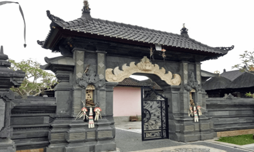
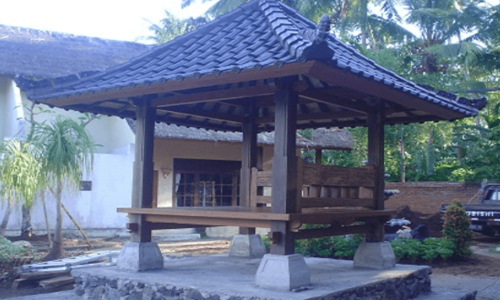

RUMAH ADAT BALI
1. Rumah Adat Bali Angkul-Angkul

Nama rumah adat Bali yang pertama kita bahas adalah Angkul Angkul dengan bentuk yang sangat unik. Jika diperhatikan, masing masing rumah adat memang umumnya mempunyai pintu utama berupa gapura dengan atap yang artistik dan model tradisional seperti candi yang ada di bagian kiri dan kanan.
Selain itu, atap yang menjadi penghubung dua sisi juga terlihat sangat uni penuh dengan ukiran yang terlihat artistik. Sedangkan sekarang ini, atap umumnya terbuat dari genteng, namun untuk angkul angkul tradisional ini memakai atap yang terbuat dari rumput kering.
2. Rumah Adat Bali Aling-Aling
| 
Aling aling ini adalah area pemilik rumah ketika ingin melakukan aktivitas seperti mengukir patung, persiapan alat upacara tradisional atau untuk beristirahat dan menerima tamu. Aling aling ini akan dikelilingi dengan tembok pembatas bernama penyeker yang menjadi simbol pembatas antara aura negatif dan juga positif.
Aling aling merupakan pembatas antara angkul angkul dengan pekarangan dan juga tempat suci yang berfungsi untuk menetralisir gangguan negatif secara skala atau niskala. Dulu, sebuah aling aling biasanya memakai kelangsah atau daun kelapa kering dan juga bisa menggunakan kelabang mantri sebagai sarana perlindungan dari berbagai kekuatan negatif. Sulaman atau ulat ulatan dari daun kelapa akan diletakkan pada aling aling namun juga ada yang ditempatkan sebagai penghias aling aling sebuah patung.
3. Rumah Adat Bali Pamerajan
|
Pamerajan atau pura keluarga menampilkan keunikan rumah adat Bali. Mayoritas penduduk Pulau Bali memang memeluk agama Hindu sehingga mempunyai pamerajan atau biasa disebut dengan pura tempat beribadah di dalam rumah.
Pamerajan ini umumnya akan dibangun pada bagian sudut rumah dan di sebelah timur laut yang menjadi bangunan suci sekaligus sakral karena penghuni rumah seringkali melakukan upacara sembahyang serta doa harian pada bangunan tersebut.
Pada bangunan ini memiliki beberapa bangunan dengan fungsi yang berbeda beda tergantung dari pemiliknya. Akan tetapi, bangunan wajib yang harus ada pada pamerajan ini adalah Kemulan, Penglurah, Padmasaro, Taksu, Peliangan dan juga Piyasan.
|